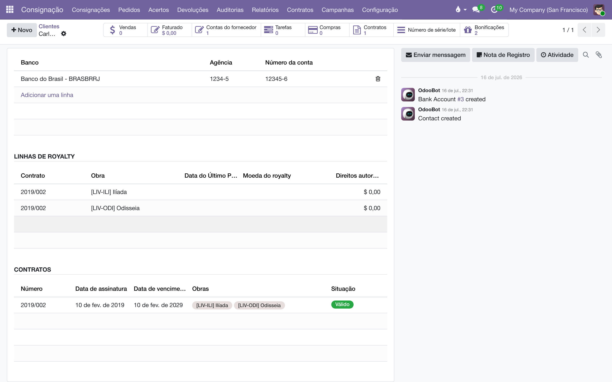

Registre os contratos da editora com autores, tradutores e ilustradores: quem recebe, por qual obra, com que percentual por faixa de exemplares — e deixe o sistema vigiar vencimentos e renovações.
Este é o módulo base da suíte de direitos autorais do Liber. Ele registra os termos de cada contrato: os favorecidos (autores, tradutores, ilustradores…), as obras (os livros do catálogo), as faixas de exemplares com o percentual de royalty de cada uma e os adiantamentos pagos. Ele também acompanha a vida do contrato — assinatura, vencimento, renovação (manual ou automática) e cancelamento — com lembretes para o responsável.
Sozinho, ele não calcula nada: quem transforma os termos em números são os módulos satélites, instalados por cima conforme a necessidade.
| Módulo | O que acrescenta |
|---|---|
| Contratos de direitos autorais (este) | O contrato em si: favorecidos, obras, faixas, adiantamentos, vigência. |
| Cálculo de royalties | Apura os royalties a partir das vendas pagas, obra por obra. |
| Pagamento de royalties | Gera as faturas de fornecedor que pagam os autores. |
| Prestação de contas | O extrato do autor em PDF, para imprimir ou enviar por e-mail. |
| IRRF sobre direitos | Retém o imposto de renda na fonte sobre cada pagamento. |
Tudo fica no aplicativo Direitos Autorais do menu principal. Com o módulo base instalado, ele traz apenas e ; os demais menus aparecem conforme os satélites são instalados.
O módulo cria dois grupos, na categoria Direitos Autorais do cadastro de usuários ():
| Grupo | Pode |
|---|---|
| Usuário | Ver e editar contratos, favorecidos e obras; emitir prestações de contas. |
| Administrador | Tudo do Usuário, mais: os menus de Configurações, contas analíticas, relatórios e faturas dos módulos satélites, e a edição manual da Data do Último Pagamento de uma linha de royalty. |
Na aba Direitos autorais do contrato, cada linha representa um par favorecido × obra: quem recebe, por qual livro.
Um contrato típico de autor: 8% até 3.000 exemplares, 10% de 3.001 a 10.000 e 12% daí em diante.
| De (exemplares) | Até (exemplares) | Percentual (%) |
|---|---|---|
| 0 | 3.000 | 8,00 |
| 3.001 | 10.000 | 10,00 |
| 10.001 | 0 (sem limite) | 12,00 |
A faixa é escolhida pela quantidade acumulada de exemplares vendidos da obra — o detalhe está no manual de Cálculo de royalties.
O sistema impede duas coisas aqui: repetir o mesmo par favorecido × obra dentro de um contrato (cada combinação só pode ter uma linha) e cadastrar uma faixa cuja quantidade final seja menor que a inicial.
Os campos Favorecidos e Obras do contrato são calculados automaticamente a partir das linhas — são eles que aparecem na lista e nos filtros.
A barra de situação do contrato passa por Minuta, Válido, Vencido, Renovado e Cancelado:
Uma rotina automática roda todos os dias e cuida do resto:
A lista de contratos tem o filtro Vencendo (3 meses) e a visão de calendário mostra cada contrato no dia do seu vencimento — dois jeitos rápidos de enxergar o que precisa de atenção.
No cadastro do contato e no cadastro do produto há um botão inteligente Contratos com a contagem de contratos em que aquele contato é favorecido (ou aquele produto é obra), além de uma aba listando esses contratos com situação e datas. O botão só aparece quando existe pelo menos um contrato.

Salvei o contrato e o número continua "Novo". O número definitivo é atribuído no primeiro salvamento; se aparecer "Novo" depois de salvar, a sequência de numeração foi removida — chame quem administra o sistema.
Mudei as datas e o prazo de renovação não acompanhou. É o comportamento esperado depois que o prazo já foi definido: a sugestão automática só acontece na criação. Ajuste o Prazo de Renovação (anos) à mão se o novo período for outro.
Posso apagar uma linha de royalty? Pode, mas se os módulos de cálculo já lançaram valores na conta analítica dela, prefira manter a linha e tratar a mudança por aditivo (novo contrato ou nova linha) — apagar a linha remove também os lançamentos vinculados a ela.
O que o campo Tempo restante mostra? Os dias (ou anos e meses) até o vencimento. Contratos cancelados ou já marcados como vencidos aparecem sem valor.
Todo documento do sistema carrega um prefixo na numeração — CO/2026/00001 é um acerto, AT/2026/00042 é um chamado. A lista é a mesma em todos os manuais:
| Prefixo | O que é |
|---|---|
C | Pedido de consignação: o pedido que põe livros na prateleira do cliente — C00001, no lugar do S da venda comum. |
CO/ | Consignação, o documento do acerto: registra o que o cliente vendeu e vira venda — CO/2026/00001. |
CR/ | Retorno de consignação: o documento que pede a devolução dos exemplares da prateleira — CR/2026/00001. |
CA | Auditoria de consignação: reconstrói o saldo da prateleira do cliente pelas notas fiscais e registra o ajuste — CA00001. |
CP/ | Campanha de consignação: o sortimento-alvo por canal — quantos exemplares de cada título as prateleiras devem ter — CP/2026/0001. |
AC/ | Acordo de Consignação: o contrato com a livraria, dono da prateleira — AC/2026/00001. |
COM/OUT/ | A série da remessa de consignação ao cliente, do armazém à livraria — COM/OUT/2026/00001, no espelho do WH/OUT. |
MP/OUT/ | A série das entregas de marketplace (Olist): o pacote de pessoa física, na caixa de despacho própria do depósito — MP/OUT/2026/00001. |
COM/MOV/ | A série dos fluxos internos de prateleira da consignação — COM/MOV/2026/00001. |
COM/IN/ | A série do retorno de consignação, da prateleira ao armazém — COM/IN/2026/00001, no espelho do WH/IN. |
REM/ | Remessa: a nota de simples remessa, sem cobrança — a numeração vem do diário fiscal REM. |
COL/ | Coleta: o lote do pedido de coleta às transportadoras — COL/2026/00001. |
AT/ | Atendimento: o chamado nascido do e-mail comercial — AT/2026/00001. |
MBX/ | O lote de envio de metadados à Metabooks — MBX/2026/00001. |
Impostos de Direitos Autorais/ | O lote da fatura acumuladora do IRRF retido dos autores no mês. |
Royalties entre Empresas/ | O lote da fatura acumuladora de royalties entre as empresas da casa. |
| Do próprio Odoo | |
S | Pedido de venda comum — S00001; o pedido de consignação usa o C no lugar. |
WH/OUT | Entrega comum do armazém: a transferência de saída padrão do Odoo. |
WH/IN | Recebimento do armazém: a transferência de entrada padrão do Odoo. |
Bases antigas guardam transferências nas séries COM/ e RET/, de antes da separação por direção — o histórico não é renumerado.
Manual completo, com busca e as demais páginas: Contratos de direitos autorais.